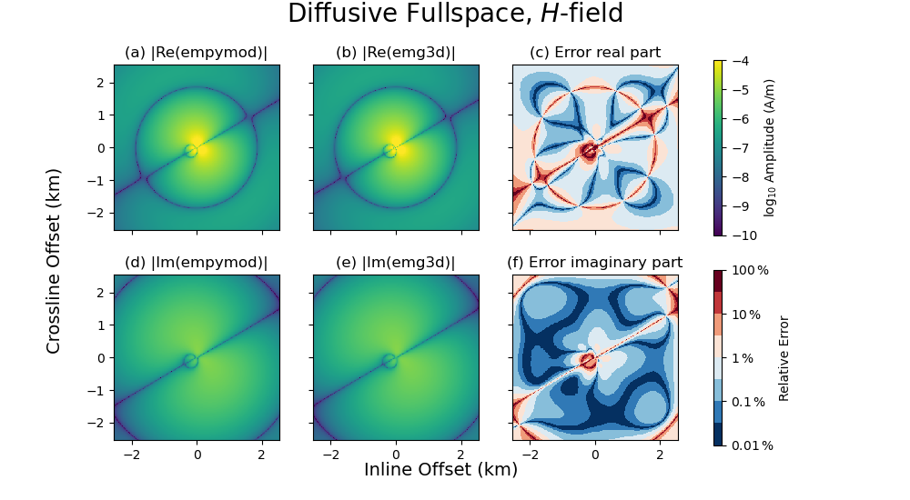

Note
Click here to download the full example code
6. Magnetic field due to an el. source#
The solver emg3d returns the electric field in x-, y-, and z-direction.
Using Farady’s law of induction we can obtain the magnetic field from it.
Faraday’s law of induction in the frequency domain can be written as, in its
differential form,
This is exactly what we do in this example, for a rotated finite length bipole
in a homogeneous VTI fullspace, and compare it to the semi-analytical solution
of empymod. (The code empymod is an open-source code which can model
CSEM responses for a layered medium including VTI electrical anisotropy, see
emsig.xyz.)
import emg3d
import empymod
import numpy as np
import matplotlib.pyplot as plt
Full-space model for a finite length, finite strength, rotated bipole#
In order to shorten the build-time of the gallery we use a coarse model.
Set coarse_model = False to obtain a result of higher accuracy.
coarse_model = True
Survey and model parameters#
# Receiver coordinates
if coarse_model:
x = (np.arange(256))*20-2550
else:
x = (np.arange(1025))*5-2560
rx = np.repeat([x, ], np.size(x), axis=0)
ry = rx.transpose()
frx, fry = rx.ravel(), ry.ravel()
rz = -400.0
azimuth = 30
elevation = 10
# Source coordinates, frequency, and strength
source = emg3d.TxElectricDipole(
coordinates=[-50, 50, -30, 30, -320., -280.], # [x1, x2, y1, y2, z1, z2]
strength=3.3, # A
)
frequency = 0.8 # Hz
# Model parameters
h_res = 1. # Horizontal resistivity
aniso = np.sqrt(2.) # Anisotropy
v_res = h_res*aniso**2 # Vertical resistivity
empymod#
Note: The coordinate system of empymod is positive z down, for emg3d it is positive z up. We have to switch therefore src_z, rec_z, and elevation.
# Compute
epm = empymod.bipole(
src=np.r_[source.coordinates[:4], -source.coordinates[4:]],
rec=[frx, fry, -rz, azimuth, -elevation],
depth=[],
res=h_res,
aniso=aniso,
strength=source.strength,
srcpts=5,
freqtime=frequency,
htarg={'pts_per_dec': -1},
mrec=True,
verb=3,
).reshape(np.shape(rx))
:: empymod START :: v2.2.0
depth [m] :
res [Ohm.m] : 1
aniso [-] : 1.41421
epermH [-] : 1
epermV [-] : 1
mpermH [-] : 1
mpermV [-] : 1
> MODEL IS A FULLSPACE
direct field : Comp. in wavenumber domain
frequency [Hz] : 0.8
Hankel : DLF (Fast Hankel Transform)
> Filter : Key 201 (2009)
> DLF type : Lagged Convolution
Loop over : Frequencies
Source(s) : 1 bipole(s)
> intpts : 5
> length [m] : 123.288
> strength[A] : 3.3
> x_c [m] : 0
> y_c [m] : 0
> z_c [m] : 300
> azimuth [°] : 30.9638
> dip [°] : -18.9318
Receiver(s) : 65536 dipole(s)
> x [m] : -2550 - 2550 : 65536 [min-max; #]
> y [m] : -2550 - 2550 : 65536 [min-max; #]
> z [m] : 400
> azimuth [°] : 30
> dip [°] : -10
Required ab's : 14 24 34 15 25 35 16 26 36
:: empymod END; runtime = 0:00:00.671096 :: 40 kernel call(s)
emg3d#
if coarse_model:
min_width_limits = 40
stretching = [1.045, 1.045]
else:
min_width_limits = 20
stretching = [1.03, 1.045]
# Create stretched grid
grid = emg3d.construct_mesh(
frequency=frequency,
properties=h_res,
center=source.center,
domain=([-2500, 2500], [-2500, 2500], [-2900, 2100]),
min_width_limits=min_width_limits,
stretching=stretching,
lambda_from_center=True,
lambda_factor=0.8,
center_on_edge=False,
)
grid
:: emg3d START :: 21:47:20 :: v1.8.0
MG-cycle : 'F' sslsolver : False
semicoarsening : False [0] tol : 1e-06
linerelaxation : False [0] maxit : 50
nu_{i,1,c,2} : 0, 2, 1, 2 verb : 4
Original grid : 80 x 80 x 80 => 512,000 cells
Coarsest grid : 5 x 5 x 5 => 125 cells
Coarsest level : 4 ; 4 ; 4
[hh:mm:ss] rel. error [abs. error, last/prev] l s
h_
2h_ \ /
4h_ \ /\ /
8h_ \ /\ / \ /
16h_ \/\/ \/ \/
[21:47:23] 3.602e-02 after 1 F-cycles [3.540e-05, 0.036] 0 0
[21:47:25] 3.766e-03 after 2 F-cycles [3.701e-06, 0.105] 0 0
[21:47:28] 5.020e-04 after 3 F-cycles [4.933e-07, 0.133] 0 0
[21:47:30] 7.497e-05 after 4 F-cycles [7.367e-08, 0.149] 0 0
[21:47:33] 1.211e-05 after 5 F-cycles [1.190e-08, 0.162] 0 0
[21:47:35] 2.223e-06 after 6 F-cycles [2.184e-09, 0.184] 0 0
[21:47:38] 6.236e-07 after 7 F-cycles [6.128e-10, 0.281] 0 0
> CONVERGED
> MG cycles : 7
> Final rel. error : 6.236e-07
:: emg3d END :: 21:47:38 :: runtime = 0:00:18
Compute magnetic field \(H\) from the electric field#
Plot#
# Start figure.
a_kwargs = {'cmap': "viridis", 'vmin': -10, 'vmax': -4, 'shading': 'nearest'}
e_kwargs = {'cmap': plt.cm.get_cmap("RdBu_r", 8),
'vmin': -2, 'vmax': 2, 'shading': 'nearest'}
fig, axs = plt.subplots(2, 3, figsize=(10, 5.5), sharex=True, sharey=True,
subplot_kw={'box_aspect': 1})
((ax1, ax2, ax3), (ax4, ax5, ax6)) = axs
x3 = x/1000 # km
# Plot Re(data)
ax1.set_title(r"(a) |Re(empymod)|")
cf0 = ax1.pcolormesh(x3, x3, np.log10(epm.real.amp()), **a_kwargs)
ax2.set_title(r"(b) |Re(emg3d)|")
ax2.pcolormesh(x3, x3, np.log10(e3d.real.amp()), **a_kwargs)
ax3.set_title(r"(c) Error real part")
rel_error = 100*np.abs((epm.real - e3d.real) / epm.real)
cf2 = ax3.pcolormesh(x3, x3, np.log10(rel_error), **e_kwargs)
# Plot Im(data)
ax4.set_title(r"(d) |Im(empymod)|")
ax4.pcolormesh(x3, x3, np.log10(epm.imag.amp()), **a_kwargs)
ax5.set_title(r"(e) |Im(emg3d)|")
ax5.pcolormesh(x3, x3, np.log10(e3d.imag.amp()), **a_kwargs)
ax6.set_title(r"(f) Error imaginary part")
rel_error = 100*np.abs((epm.imag - e3d.imag) / epm.imag)
ax6.pcolormesh(x3, x3, np.log10(rel_error), **e_kwargs)
# Colorbars
fig.colorbar(cf0, ax=axs[0, :], label=r"$\log_{10}$ Amplitude (A/m)")
cbar = fig.colorbar(cf2, ax=axs[1, :], label=r"Relative Error")
cbar.set_ticks([-2, -1, 0, 1, 2])
cbar.ax.set_yticklabels([r"$0.01\,\%$", r"$0.1\,\%$", r"$1\,\%$",
r"$10\,\%$", r"$100\,\%$"])
ax1.set_xlim(min(x3), max(x3))
ax1.set_ylim(min(x3), max(x3))
# Axis label
fig.text(0.4, 0.05, "Inline Offset (km)", fontsize=14)
fig.text(0.05, 0.3, "Crossline Offset (km)", rotation=90, fontsize=14)
fig.suptitle(r'Diffusive Fullspace, $H$-field', y=1, fontsize=20)
print(f"- Source: {source}")
print(f"- Frequency: {frequency} Hz")
print(f"- Magnetic receivers: z={rz} m; θ={azimuth}°, φ={elevation}°")
fig.show()

- Source: TxElectricDipole: 3.3 A;
e1={-50.0; -30.0; -320.0} m; e2={50.0; 30.0; -280.0} m
- Frequency: 0.8 Hz
- Magnetic receivers: z=-400.0 m; θ=30°, φ=10°
Total running time of the script: ( 0 minutes 21.690 seconds)
Estimated memory usage: 112 MB